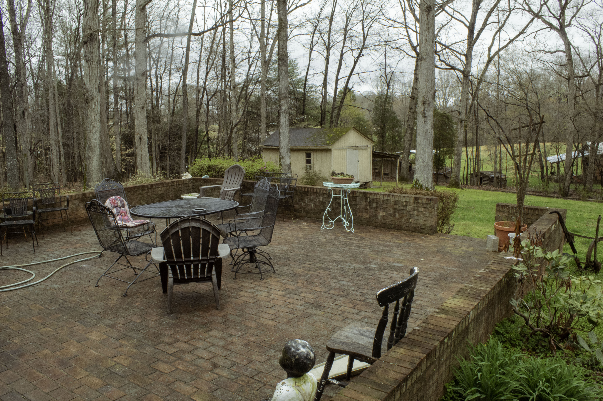

MARCH 23
CONFINED TO WATCHING
MUSIC DOCUMENTARIES WITH DAD. ALTHOUGH WE
HAVE THE PATIO. IT’S WHERE WE GET OUR FRESH
AIR WHILE LISTENING
TO MUSIC (PICTURED). YET,
KNOWING THAT I CANNOT LEAVE IS CONSTANTLY ON
MY MIND. STAYING HOME IS DEFINITELY NOT MY
THING. I’M THE TYPE OF PERSON THAT LOVES TO
CONSTANTLY BE OUT OF THE HOUSE. THAT IS WHY
THE IDEA OF SELF QUARANTINE IS CLOSE TO A
NIGHTMARE FOR ME.
TO MAKE IT WORSE, NORTH
CAROLINA IS THE LAST PLACE I WANT TO BE IN
GENERAL. GROWING UP
IN A SMALL TOWN, WHERE
NOTHING HAPPENS, EVERYONE WANTS TO BE IN YOUR
BUSINESS. HERE
I HAVE NO PRIVACY, EVEN THOUGH
EVERYTHING IS MUCH FARTHER APART. FUNNY HOW
THAT WORKS.
⬇
